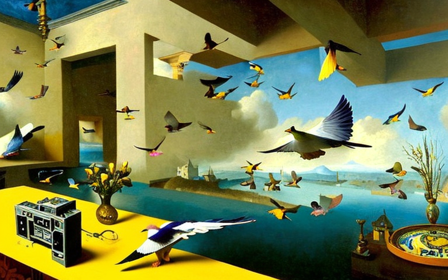
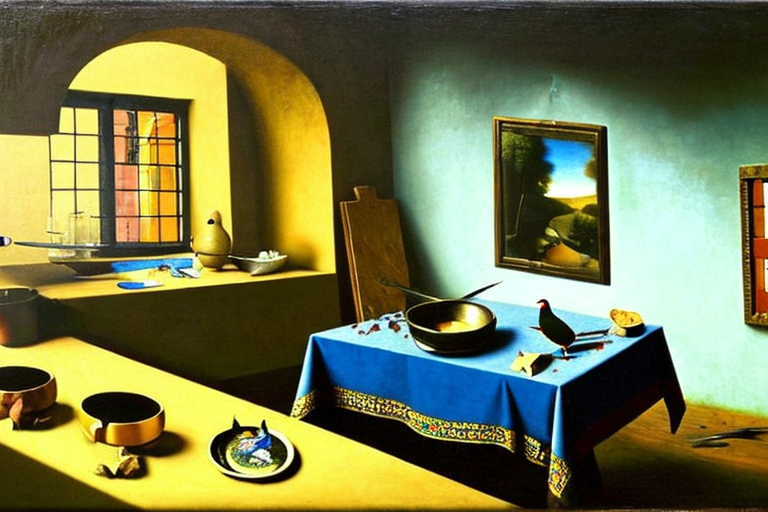
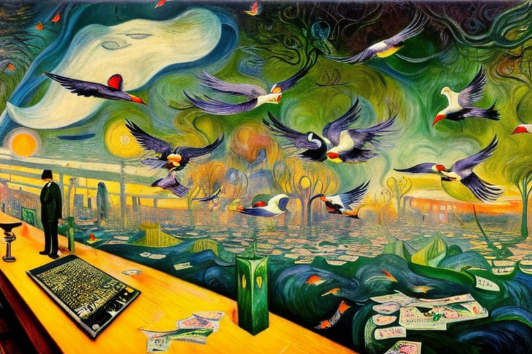
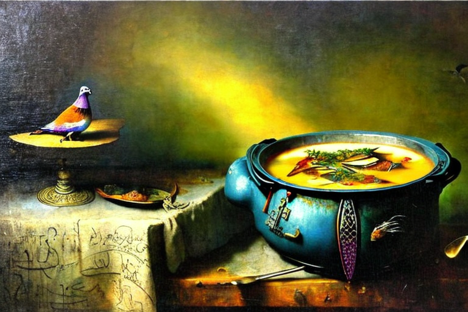

The spy pigeons and the chef
HOME
Table of Contents
The mission of the pigeons

Once upon a time, in a world at war, the British army was in dire need of a solution. Their enemies were becoming increasingly elusive, their movements a mystery that seemed impossible to uncover. That was until the top brass had a stroke of genius - they would use pigeons, equipped with spy cameras, to gather intelligence on the enemy’s movements.
The soldiers were trained in the art of pigeon handling, learning to care for their avian allies as they prepared them for their mission. Each pigeon was fitted with a tiny, yet powerful camera, capable of capturing stunning images of the enemy’s movements. The pigeons were trained to fly over enemy territory, taking in every detail of their actions as they passed overhead.
And so, on a warm summer’s day, the pigeons took flight. The sun was just beginning to rise as the flock took to the skies, their powerful wings beating against the morning air. They flew over the enemy’s camp, capturing images of their movements and sending the information back to the waiting soldiers.
The soldiers watched with bated breath as the pigeons swooped and darted, capturing every detail of the enemy’s actions. They recorded the number of soldiers in each unit, the placement of their weapons, and the layout of their camp. The pigeons were tireless in their efforts, flying for hours on end, collecting the information that would give the army the upper hand.
As the sun set on that fateful day, the pigeons returned, their cameras filled with invaluable intelligence. The soldiers sifted through the images, piecing together the enemy’s movements, their strengths, and their weaknesses. They meticulously cataloged each piece of information, analyzing every detail in their quest to gain the upper hand.
Days turned into weeks, and the pigeons continued their mission, flying over enemy territory and recording their movements. The soldiers grew increasingly confident in their abilities, knowing that they held the key to victory in their hands. And so, the pigeons flew on, the soldiers watching their every move, as they recorded the minutiae of the enemy’s actions in painstaking detail.
Insatiable appetite

But there was one soldier who would put a dark twist on this otherwise glorious tale. He was the army chef, a man known for his love of fine cuisine and his insatiable appetite. Over time, as the pigeons continued to fly over enemy territory, the chef’s eyes began to wander. He gazed longingly at the birds, imagining the tender meat that lay beneath their feathers.
And so it began. Slowly but surely, the chef began to make the pigeons a part of his menu. He cooked them in stews, roasted them over open flames, and fried them to golden perfection. The soldiers were unaware of the chef’s actions, their minds focused on the enemy and their mission.
But as the days passed, the number of pigeons began to dwindle. At first, the soldiers didn’t take notice, thinking that the birds had simply flown off in search of other adventures. But as the days turned into weeks and the weeks into months, it became clear that something was amiss. The pigeons were gone, and the chef was the only one who seemed to know why.
And so, the truth came out. The chef had devoured the entire flock of pigeons, one bird at a time, relishing in their flavor and savoring every bite. The soldiers were horrified, but the chef just laughed it off, telling tales of the succulent meat and the juicy, tender flesh. He threw the bones to the dog to lick, relishing in the simple pleasure of a good meal.
As the war raged on, the soldiers couldn’t shake the image of the chef and his insatiable appetite. They would huddle around the campfire at night, telling tales of the chef and his love of pigeon meat. They would laugh and joke, but deep down they were haunted by the knowledge that their avian allies had fallen victim to the chef’s insatiable hunger.
Giant balloon
Amidst the tales of pigeon-eating chefs and the battles fought against enemy forces, there was one soldier who refused to give up on the pigeons. He had an idea, a brilliant, crazy idea that just might work. He would inflate a giant pigeon balloon and use that to spy over enemy territory.
And so, with the help of his fellow soldiers, the soldier set to work. He found a large, clear plastic tarp and began to inflate it, working tirelessly until it was the size of a small building. Then, with a few strategic cuts and some clever stitching, he transformed the tarp into a giant pigeon balloon, complete with feathers and a beak.
Next came the fun part. The soldier dressed the giant pigeon balloon in a full-body jacket and a pair of sunglasses, giving it the appearance of a hip and stylish bird, ready to take on the world. He tested the balloon in the air, laughing with delight as it soared over the countryside, carried by the winds and the currents.
And so, the day arrived. The soldier, along with his giant pigeon balloon, set out to spy on the enemy. The soldiers held their breaths as the giant pigeon floated over the enemy’s stronghold, the cameras recording every movement and every detail.
The enemy was taken aback by the sudden appearance of the giant pigeon, and for a moment, they were frozen in confusion. But as the pigeon continued to float overhead, they began to realize that this was no ordinary bird. The sunglasses and the full-body jacket gave the game away, and they began to shoot at the balloon, trying to bring it down.
The soldier and his pigeon fought bravely, dodging bullets and weaving through the air. But in the end, the enemy was too much, and the giant pigeon balloon began to deflate, slowly drifting to the ground. The soldier was captured, but the images that he had captured with his pigeon balloon would be used to plan the next attack, and the enemy would never be the same.
The spy’s mission

In the aftermath of the giant pigeon balloon mission, the tides of war were changing. The enemy was becoming more and more sophisticated, their security measures more advanced, making it harder and harder for the British soldiers to gather information. But one soldier refused to give up. He had a new idea, a daring idea that would bring the fight to the enemy in a way they never saw coming.
The soldier’s idea was simple. Instead of relying on the internet to download sensitive information, they would send in a traditional spy, a man who was trained in the art of espionage and who would be able to infiltrate the enemy’s strongholds and steal the information they needed.
And so, the soldier set to work. He handpicked the best of the best, a man with a sharp mind, quick reflexes, and an iron will. He trained this man in the ways of espionage, teaching him how to blend in, how to move undetected, and how to strike when the moment was right.
The spy was given a mission, a mission to infiltrate the enemy’s headquarters and steal the sensitive information that would turn the tide of war. The soldier’s team gave him the latest in spy gear, from high-tech gadgets to a sleek and stylish suit.
The night of the mission arrived, and the spy set out on his mission. He slipped into the enemy’s headquarters, moving silently and smoothly through the halls. He had no use for the internet, preferring to rely on his wits and his training. He quickly located the room where the sensitive information was stored and went to work, breaking into the safe and stealing the documents.
But as he made his escape, the enemy’s security team discovered him. They chased him through the halls, determined to capture him and retrieve the stolen information. The spy was outnumbered and outgunned, but he refused to give up. He fought with all his might, dodging bullets and hiding in unimaginable places.
The failed escape

With his mission complete, the spy made his way to the roof of the enemy’s headquarters. He was exhausted but triumphant, and he breathed a sigh of relief as he gazed out at the city below. He knew he still had one more hurdle to overcome, one more obstacle to face before he could return home to his comrades.
He had arranged for a flock of pigeons to carry him out of the headquarters, but as he waited, he realized something was wrong. The pigeons were nowhere to be seen. He waited and waited, but still, no pigeons appeared.
Meanwhile, back at the British army base, the chef was busy in the kitchen. He was whipping up a new dish, one that he had been experimenting with for weeks. It was a pigeon stew, made from the very pigeons that were supposed to carry the spy to safety.
As the chef savored the last bite of his delicious stew, he suddenly remembered the spy. He wondered where the man was and what had become of him. He shrugged and went back to his cooking, satisfied in the knowledge that he had provided a hearty meal for his comrades.
As the hours ticked by, the spy realized that his escape plan was not going to work. He was stuck on the roof of the enemy’s headquarters, with no way to get down. He thought about making a run for it, but he knew he would never make it past the enemy’s security team.
And so, he settled in for the night, trying to come up with a new plan, a new way to escape. But as he sat there, he couldn’t help but laugh. He had been brought down by a simple thing, a lack of pigeons.